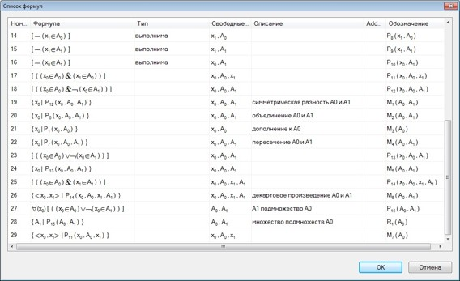
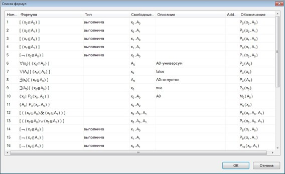

О проекте
Программа MathSem — это компьютерный практикум, который помогает студентам и аспирантам изучать математическую логику, дискретную математику, автоматизированное доказательство теорем. С помощью нашего компьютерного практикума строятся определения и теоремы из дискретной математики.
Проблематика, Цель, Актуальность
В настоящее время во всем мире бурно развиваются программы, которые умеют доказывать теоремы. Широко распространены программы-калькуляторы для вычислений и построений в булевой алгебре и теории множеств. Целью проекта является создание программного продукта для обучения студентов математической логике и теории алгоритмов. Актуальность проекта связана с тем, что он лежит на стыке математики, информатики, таких современных областей как представление знаний, семантические сети, дедуктивные системы. Это программа будет использоваться научными работникам в области математики, аспирантами, студентами.
Интерфейс
 Результаты на данный момент
На данный момент разработан сайт, а также приложение, но все еще остается много задач по улучшение продукта, который значительно упростят использование программы.